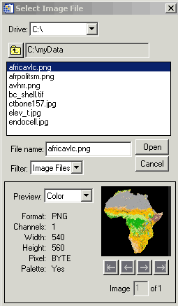

The DIALOG_READ_IMAGE function is a graphical interface allowing the user to select an image file and read it into an IDL variable. A preview of the selected image is provided. The interface is created as a modal dialog with an optional parent widget.
Result= DIALOG_READ_IMAGE ( [Filename] [, BLUE=variable] [, DIALOG_PARENT=widget_id] [, FILE=variable] [, FILTER_TYPE=string] [, /FIX_FILTER] [, GET_PATH=variable] [, GREEN=variable] [, IMAGE=variable] [, PATH=string] [, QUERY=variable] [, RED=variable] [ ,TITLE=string] )
This function returns 1 if the “Open” button was clicked, and 0 if the “Cancel” button was clicked.
An optional scalar string containing the full pathname of the file to be highlighted.
Set this keyword to a named variable that will contain the blue channel vector (if any).
The widget ID of a widget that calls DIALOG_READ_IMAGE. When this ID is specified, a death of the caller results in the death of the DIALOG_READ_IMAGE dialog. If DIALOG_PARENT is not specified, then the interface is created as a modal, top-level widget.
Set this keyword to a named variable that will contain the selected filename with full path when the dialog is created.
Set this keyword to a scalar string containing the format type the dialog filter should begin with. The default is “Image Files”. The user cannot modify the filter if the FIX_FILTER keyword is set. Valid values are obtained from the list of supported image types returned from QUERY_IMAGE. In addition, there is also the “All Files” type. If set to “All Files”, queries will only happen on filename clicks, making the dialog much more efficient.
Example:
FILTER='.jpg, .tiff'
Note: You can use language catalogs to internationalize this value with strings in particular languages.
When this keyword is set, only files that satisfy the filter can be selected. The user has no ability to modify the filter.
Set this keyword to a named variable in which the path of the selection is returned.
Set this keyword to a named variable that will contain the green channel vector (if any).
Set this keyword to a named variable that will contain the image array read. If Cancel was clicked, no action is taken.
Set this keyword to a string that contains the initial path from which to select files. If this keyword is not set, the current working directory is used.
Set this keyword to a named variable that will return the QUERY_IMAGE structure associated with the returned image. If the “Cancel” button was pressed, the variable set to this keyword is not changed. If an error occurred during the read, the FILENAME field of the structure will be a null string.
Set this keyword to a named variable that will contain the red channel vector (if any).
Set this keyword to a scalar string to be used for the dialog title. If it is not specified, the default title is “Select Image File”.
Note: You can use language catalogs to internationalize this value with strings in particular languages.
The following statement opens the dialog so that you can select among .gif, .tiff, .dcm, .png and .jpg files. When you select a file and click Open, the file path is stored in selectedFile variable and the image data is stored in the Image variable.
result = DIALOG_READ_IMAGE(FILE=selectedFile, IMAGE=image)
Enter the following line to display image data in an iImage display.
IF result EQ 1 THEN iImage, image
When you open the Select Image File dialog using the DIALOG _READ_IMAGE function or the Import Image macro, a dialog similar to the following appears.
|
 |
You can use the dialog fields as follows:
|
Drive |
Select the main-level directory and then select the sub-directory or image file in the listbox. |
|
Open |
Opens the selected image file. |
|
Cancel |
Cancels the current image selection. |
|
Preview |
Selects the color mode of the preview or turns preview functionality off. |
|
Arrow Keys |
Scrolls through multiple images in the file. Note - You can only read in one image of a multi-image file. The image in the preview is the image that will be read. |
|
5.3 |
Introduced |